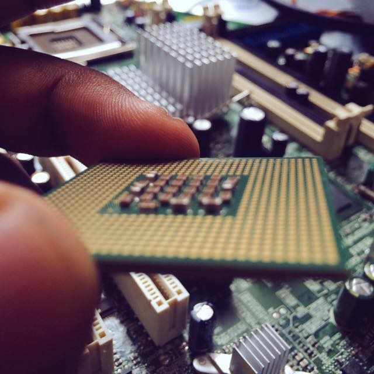

My Journey into Computer Architecture
A Pentium 4, four integers, and a short x86 loop explain why clock speed tells only part of the story.


The Pentium 4 in the photograph is where my interest in computer architecture began. I’m holding it over a motherboard with the contacts facing the camera. From that side you can see how the package meets the socket. Everything I wanted to understand about the processor happens out of sight. What does it actually do between reading an instruction and making its result available to the next one?
Four numbers and a loop
I like to start with something I can work through on paper. Suppose an array contains four 32-bit integers, 4, 7, 1, and 3. I want their sum. In the following x86 assembly, written in Intel syntax, ESI initially holds the address of the first integer. EAX holds the running total and ECX counts the elements still to visit. Intel’s instruction set reference, volume 2.
xor eax, eax
mov ecx, 4
next_value:
add eax, [esi]
add esi, 4
dec ecx
jnz next_valueOn the first pass the processor reads the integer at the address in ESI and adds 4 to the zero in EAX. Moving the pointer forward four bytes puts it at the second integer. Decrementing the counter leaves three, so the jump takes us back to next_value. The subsequent totals are 11, 12, and 15. On the last pass the decrement produces zero, sets the zero flag, and the conditional jump falls through. Those register values and that final branch outcome are the promises the instruction set makes to the program.
What the processor can do early
The instructions on the page look like a queue of jobs for a single worker. The Pentium 4’s NetBurst design has more options. Its front end decodes x86 instructions into smaller operations. It can keep a sequence of those operations in a trace cache, so a trip around a familiar loop can reuse the decoded work. Farther along, the execution engine can schedule an operation when its inputs and an appropriate execution unit are available. Instructions retire in program order, preserving the state the software expects to see. Intel’s description of the Pentium 4 microarchitecture.
There is a limit you can spot directly in the example. The second update of EAX needs the sum from the first. The pointer update, on the other hand, needs the old address and the constant 4. It can produce the next address without knowing the sum. This is why I draw arrows between inputs and results when I read assembly. Counting six lines of source gives me a poor basis for predicting how long the loop will take. Following the arrows tells me which calculations really have to wait.
Breaking a dependency on paper
There is a simple way to change the example and see what that dependency costs. Keep two running sums. Put 4 and 1 into the first sum and 7 and 3 into the second. The partial results are 5 and 10, and the final addition still produces 15. The order is valid here because the example uses small integers that fit in a register. A floating-point reduction would need a separate discussion about rounding before changing its order.
With two accumulators, an instruction updating the second only needs the previous value of that accumulator. It can overlap arithmetic from the first chain when the inputs and execution resources are ready. Now imagine a longer array with the same layout. A single accumulator has one addition feeding the next for the entire length. The two-way version has two shorter chains and a final addition joining them. It still has to read every element. If waiting for memory dominates that particular run, rearranging the additions may do little for elapsed time.
This thought experiment gives me a way to separate two numbers in a processor manual. Latency answers how long a result takes to become available to an instruction that needs it. Throughput describes how frequently the machine can start or finish operations under suitable conditions. A unit can accept another independent operation while the first one is still in flight. I can exploit that property only if the program supplies independent work. The two running sums make that requirement visible without assigning a cycle count to the particular chip in my hand.
The final trip around the loop
A branch creates a different kind of wait. To keep a deep pipeline busy, the front end predicts where instruction fetching should continue. In this example the backward jump is taken three times and falls through once. If the processor predicts another trip on that last iteration, it can start work that the program will never use. When the branch resolves, younger work from the wrong path is discarded and fetching resumes at the fall-through address. The answer remains 15. The time spent obtaining it depends in part on how well the predictions matched those four outcomes. Intel’s optimization manual, NetBurst branch prediction.
What I would measure
I can change one aspect of the experiment without changing its arithmetic. Put 1,024 integers next to one another, then place the same values 4,096 bytes apart in a second version. The first traversal reads a 4 KiB span. The second visits addresses spread across roughly 4 MiB. A fetched cache line can supply several successive integers in the first layout. The widely spaced layout gives fewer opportunities to reuse the neighboring bytes and also touches more virtual-memory pages.
The placement also matters if I decide to count instructions. The same number of element loads can generate very different amounts of traffic farther down the memory hierarchy. When a block of neighboring bytes has already arrived, another load from that block can be served nearby. A large stride makes a subsequent load more likely to need another block. Repeating a traversal might keep more of one layout resident than the other. Looking only at the static assembly would miss both effects.
Before timing the two, I would make both return the sum, check that the answers agree, and inspect the generated code. Then I’d repeat each traversal with the same data and record whether it was the first or a later pass. That turns an intuition about memory locality into a question a real machine can answer. It is the reason I still like the photograph. A chip small enough to hold in two fingers can run that same handful of instructions in ways the printed program barely hints at.